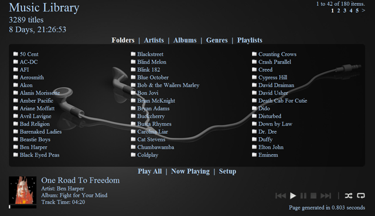
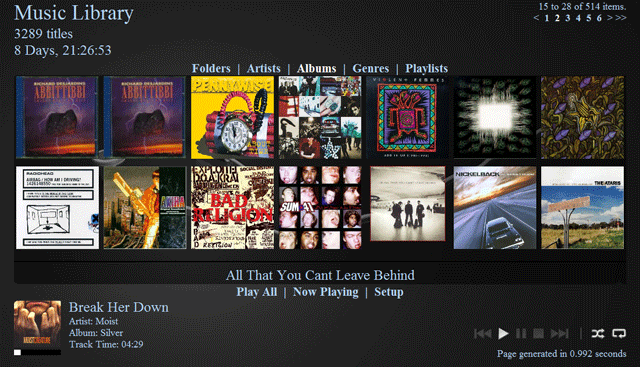
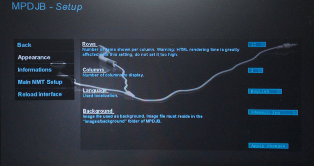
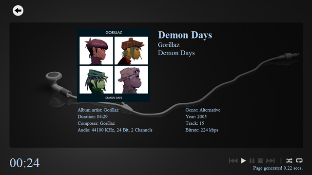
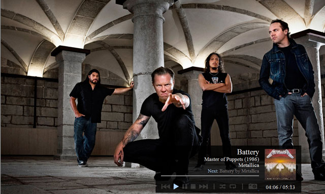

MPD JukeBox (MPDJB)
This work is highly based on ExtendedGayaExtended. The original application intended to replace the whole Gaya interface while this work focuses only on Music browsing. It is mostly a rework of the original application to integrate Music Player Daemon (MPD) browsing instead of the local filesystem. Big thanks to the previous developers of ExtendedGaya, Delphy, Arjan Mels and GShock and other contributors.
MPDJB is a PHP interface used to browse a MPD music database and to control music playback. It allows to browse your library by folders, artists, albums or genres and to list user-defined playlists.
The music listing is retrieved via MPD commands. It means it relies exclusively on the MPD database instead of the local filesystem. If you add new folders of songs in your library, you will need to update the MPD database to reflect the changes. You can do so either by issuing a “mpc update” or by selecting the "Update Library" option in the configuration page. IMPORTANT: Once the update is completed, you must reload the configuration to see the newly added files. See note for this option below.
Please share your comments/suggestions and report any problems you may find.
Requirements:
* MPD, See this thread: http://www.networkedmediatank.com/showth...?tid=17306
* MyIHome server enabled on your NMT
* FTP service started. Required by the MPD server.
Main features:
* Listen to your music without leaving the user interface;
* Provides options to control most of MPD functionalities;
* Auto-playlists, i.e. ability to play all files in current folder, or add folder to playlist;
* Option to save playlists;
* Setup page to customize the interface, number of items per page, background image …;
* Thumbnail view for albums;
* Dutch, German, French and English localizations for the moment, but more languages can be easily added.
* Both SD and HD templates, although more effort is made on the HD theme.
TVID:
* Play - Toggle pause/play. Play is the same as "mpc play", songs must be present in playlist.
* Next - Play next song
* Stop - Stop Playing
* Title/Url - Add the folder currently selected to the current playlist. Best way to navigate and add songs.
* Delete - In "Now Playing", removes the selected song from the playlist.
* INFO - When a song is playing, INFO will direct to the songinfo page.
Note: I did not implement the "PREV" tvid because that button on the remote is mapped to the "back" function of the browser. I did not want to sacrifice navigation for this. However, if you need the PREV button to go to the last song, this could be easily mapped to another button of the remote.
Screenshots:
Here are some screenshots:
Folder navigation:

Album view:

Configuration page:

Note on the "Reload interface" option above, this is used to reset the PHP session. Sessions are used for two things, first to cache large directory listings. Secondly, it caches the configuration (mpdjb.conf) instead of loading the config at each page refresh.
Now Playing page:

Now Playing page with FanArt (Added v1.5):

Installation:
IMPORTANT: Be sure to remove the previous version if you installed it by deleting the MPDJB folder. At first run, the main config is cached within a php session located in the tmp subdirectory. If this folder is not deleted, the new config would not be read until the old session expires.
To install, run these lines via telnet:
Code:
cd /share
wget http://jbelanger.co.cc/nmt/mpdjb-v1.51-20090802.tar.gz -qO - | tar xvz
Then browse to the folder "MPDJB" on your NMT and select index.htm. If you want to change the default location, you only need to edit the file index.htm.
The version that will be installed is precompiled with Turck MMCache. If you want to obtain the source (PHP), you can get it from http://jbelanger.co.cc/nmt/
Uninstallation:
Simply delete the MPDJB folder. No file is modified outside of the application folder.
Changelog:
v1.51
- Corrected problems when adding an album with Title/Url and there a "&" in the album name.
- Added the possiblity to select a remote jsp file by specifying its URL.
- Added German and Dutch translations (provided by FLaSH and ToRrES).
- Default Background image now darker and cropped to 1280*720.
- Re-added script to correct permissions, accidently removed since v1.4.
- Fixed some localizations issues.
- Fixed Album image not always shown in Now Playing page
v1.5
- Template_SD width changed to 620 instead of 625
- Added a SlideShow feature (Look for the new icon in the mini player)
---- The default slideshow folder can be selected in the setup page.
---- The default image directory is /share/Photo.
---- This should be changed to fit your setup. This can be done by adding a new line in mpdjb.conf and by selecting it in the setup page.
---- Images will play randomly, and random won't be in the same order in subsequent launches.
---- Currently, there is no limit on the number of files found. The first time you start this version, a playlist will be generated so it could take longer to load the interface based on the number of files in the selected folder.
- Added sorting by tracks when viewing album listing
- Added song duration labels
- Songs are now labeled "artist-title" in genre listing instead of only the song title.
- Added a list view option for albums.
- Added a new "Switch View" option in the album listing. You can now toggle between different views directly from the main interface.
- When viewing song listings, the maximum number of columns has been reduced to 2 to show titles and songs duration correctly.
- Added browse by letter for the album view.
- Reworked default album view:
---- Decreased the number of items shown from 16 to 14. That way titles can now be displayed correctly.
---- Title will now be truncated correctly. ("..." appended if more than 3 lines)
- If mpd does not have tag info for a song, the file name will be used instead.
- Added a new Now Playing Mode with FanArt.
---- FanArt will be displayed if any images within artist directory are found and if the width of the image is more than 600px. (to avoid including album art)
---- If more than one image is found, a random image is selected.
- Added an option in the setup page to choose between 3 different views for the Now playing page.
v1.4
- Mapping of buttons - Edit mpdjb.conf to change default key mapping. You can also map a button to update the MPD database.
- Removed blank results in artist and album view.
- Added translations for German and Dutch (thanks to FLaSH and ToRrES)
- Added a "Browse by letters" feature
v1.3
- Fixed broken page numbering
- Added German localization (thanks to Flash)
- Added Dutch localization (thanks to ToRrES)
- Added an option to enter a different name for the albumart, defaulted to "folder.jpg"
- Completely new Albumview
- Added an option to choose how many items are shown in the albumview
- Added a log label to view last command sent to MPD
- Added save playlist option in now playing page
- Changed the Now Playing song display at the bottom and added a static progressbar
- Added the INFO TVID, when song playing, pressing INFO will forward to the songinfo page (Now Playing)
- Added more patterns in language files
- Fixed pause showing 0:00 instead of actual time
- Removed automatic sorting when viewing contents of album/artist/playlist
- Added localization to songinfo page
v1.2
- Improvements to the SD version
- Corrected view when numbers of rows/columns are changed, it will now display correctly when row number is changed
- Made interface fonts bigger for both SD and HD theme
- Added an option to update MPD library
- Corrected miniplayer offset in NowPlaying page in the SD theme
- Enlarged Album Art image size in Now Playing page
- Removed item numbers (there was too much elements on the interface and this was causing weird display behavior when too much elements, ie more than 30 items in listing, can now have up to 48 items in listing)
- Added icons to items in listing (to replace line numbers)
v1.1
- Added auto-refresh feature on song change
- Added SD template (edit mpdjb.conf and change hd for sd to enable).
- Added now playing page to show song infos.